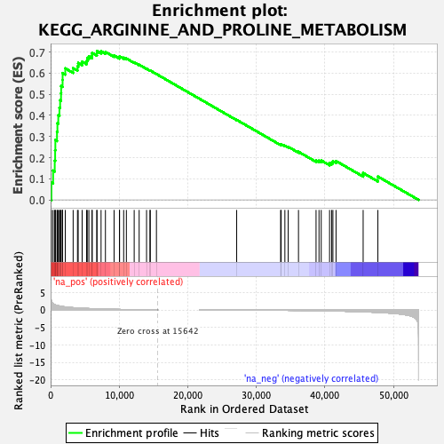
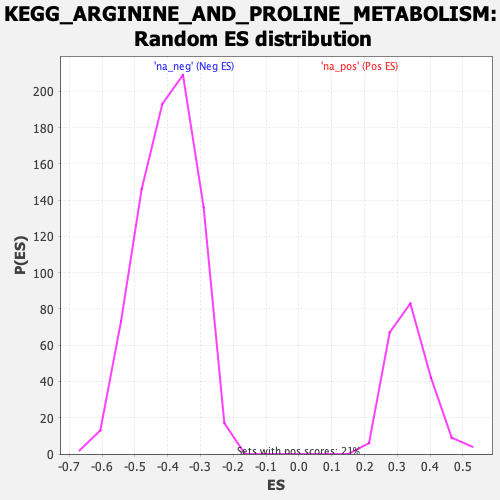

| | | Dataset | prerank |
| Phenotype | NoPhenotypeAvailable |
| Upregulated in class | na_pos |
| GeneSet | KEGG_ARGININE_AND_PROLINE_METABOLISM |
| Enrichment Score (ES) | 0.704995 |
| Normalized Enrichment Score (NES) | 2.0922067 |
| Nominal p-value | 0.0 |
| FDR q-value | 0.0 |
| FWER p-Value | 0.0 |
Table: GSEA Results Summary

Fig 1: Enrichment plot: KEGG_ARGININE_AND_PROLINE_METABOLISM
Profile of the Running ES Score & Positions of GeneSet Members on the Rank Ordered List
| SYMBOL | RANK IN GENE LIST | RANK METRIC SCORE | RUNNING ES | CORE ENRICHMENT | | 1 | OTC | 116 | 2.542 | 0.0825 | Yes |
| 2 | SAT2 | 363 | 1.824 | 0.1387 | Yes |
| 3 | NOS3 | 600 | 1.539 | 0.1856 | Yes |
| 4 | NAGS | 660 | 1.497 | 0.2344 | Yes |
| 5 | GOT1 | 691 | 1.472 | 0.2829 | Yes |
| 6 | ACY1 | 930 | 1.310 | 0.3222 | Yes |
| 7 | ALDH9A1 | 991 | 1.269 | 0.3633 | Yes |
| 8 | CKB | 1118 | 1.211 | 0.4014 | Yes |
| 9 | LAP3 | 1285 | 1.147 | 0.4365 | Yes |
| 10 | PRODH | 1385 | 1.110 | 0.4716 | Yes |
| 11 | ALDH2 | 1519 | 1.056 | 0.5044 | Yes |
| 12 | MAOA | 1536 | 1.049 | 0.5390 | Yes |
| 13 | CKMT1B | 1746 | 0.983 | 0.5679 | Yes |
| 14 | SMS | 1751 | 0.983 | 0.6006 | Yes |
| 15 | ALDH3A2 | 2139 | 0.879 | 0.6226 | Yes |
| 16 | GLS2 | 3285 | 0.667 | 0.6235 | Yes |
| 17 | CKMT1A | 3918 | 0.582 | 0.6311 | Yes |
| 18 | ALDH7A1 | 4022 | 0.571 | 0.6482 | Yes |
| 19 | GAMT | 4598 | 0.503 | 0.6543 | Yes |
| 20 | P4HA2 | 5245 | 0.447 | 0.6571 | Yes |
| 21 | AGMAT | 5342 | 0.437 | 0.6699 | Yes |
| 22 | PYCR1 | 5579 | 0.417 | 0.6794 | Yes |
| 23 | ARG1 | 6037 | 0.383 | 0.6836 | Yes |
| 24 | AOC1 | 6064 | 0.381 | 0.6958 | Yes |
| 25 | SRM | 6736 | 0.333 | 0.6944 | Yes |
| 26 | ASS1 | 6763 | 0.332 | 0.7050 | Yes |
| 27 | ALDH18A1 | 7358 | 0.295 | 0.7037 | No |
| 28 | AZIN2 | 7994 | 0.259 | 0.7005 | No |
| 29 | AMD1 | 9256 | 0.197 | 0.6836 | No |
| 30 | ASL | 10041 | 0.162 | 0.6743 | No |
| 31 | GATM | 10055 | 0.161 | 0.6795 | No |
| 32 | NOS1 | 10655 | 0.137 | 0.6729 | No |
| 33 | PYCR3 | 11050 | 0.124 | 0.6696 | No |
| 34 | CPS1 | 12189 | 0.087 | 0.6513 | No |
| 35 | GLUD1 | 12914 | 0.065 | 0.6399 | No |
| 36 | PYCR2 | 13993 | 0.034 | 0.6210 | No |
| 37 | MAOB | 14489 | 0.023 | 0.6125 | No |
| 38 | ALDH4A1 | 14538 | 0.022 | 0.6123 | No |
| 39 | P4HA1 | 15434 | 0.004 | 0.5957 | No |
| 40 | GOT2 | 27137 | -0.042 | 0.3788 | No |
| 41 | OAT | 33547 | -0.089 | 0.2622 | No |
| 42 | GLUD2 | 33629 | -0.090 | 0.2637 | No |
| 43 | CKM | 34168 | -0.095 | 0.2569 | No |
| 44 | ODC1 | 34651 | -0.104 | 0.2513 | No |
| 45 | P4HA3 | 36152 | -0.131 | 0.2277 | No |
| 46 | ALDH1B1 | 38714 | -0.196 | 0.1865 | No |
| 47 | DAO | 39146 | -0.209 | 0.1854 | No |
| 48 | GLUL | 39468 | -0.220 | 0.1868 | No |
| 49 | SAT1 | 40686 | -0.264 | 0.1728 | No |
| 50 | PRODH2 | 40987 | -0.277 | 0.1765 | No |
| 51 | GLS | 41172 | -0.284 | 0.1825 | No |
| 52 | ARG2 | 41629 | -0.301 | 0.1840 | No |
| 53 | NOS2 | 45583 | -0.511 | 0.1274 | No |
| 54 | CKMT2 | 47731 | -0.697 | 0.1105 | No |
Table: GSEA details [plain text format]

Fig 2: KEGG_ARGININE_AND_PROLINE_METABOLISM: Random ES distribution
Gene set null distribution of ES for KEGG_ARGININE_AND_PROLINE_METABOLISM